|
Knowledge
Power : Etcetera
Contributed
by Lemuel Cabia
Bootstrapping
the history of human-computer interaction
Douglas
Englehart of Stanford University developed the mouse,
along with a five-key "chorded keyboard." The combination
was supposed to replace the conventional typewriter-style
keypay.
But
with the rise of computers in the early 1970s, an office computer
called the Xerox Star came with a primitive mouse. Then Apple
included a mouse with its 1983 Lisa. The name comes from the
two buttons that resembled eyes, and the long cord that resembled
a tail. Englehart also came up with a larger, foot-operated
control called a rat, but it never really caught on.
Mouse
& Workstation
(Click
pictures for a larger view)
Here
are the historical photos depict elements of the pioneering
work in interactive computing under the visionary direction
of Doug Engelbart at SRI beginning in the early '60s.
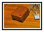First
Mouse: Doug Engelbart invented the computer mouse
in 1963-64 as part of an experiment to find better ways to
point and click on a display screen. This was fashioned downstairs
in the shop at SRI, with the casing carved out of wood, with
just 1 button - that's all there was room for. Subsequent
model of the mouse very soon had three buttons; Engelbart
would have gone for more buttons but there was only room for
three of the then-available micro-switches.
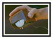First
Mouse: Engelbart holding original mouse prototype
1963-64. The two perpendicular wheels mounted in its underbelly
tracked the X-Y motion. The mouse was patented in 1970 as
an "X-Y Position Indicator".
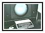Mouse
with Workstation: The mouse was invented for use
with display workstations, which Engelbart's lab was also
pioneering. This model, circa 1964-1966, was custom-built
for roughly $80,000 each (you couldn't buy them "off-the-shelf"
in those days!). Notice other buttoned-device on the left
was early prototype of the Keyset input device intended to
be used in conjunction with the mouse to input command shortcuts.
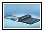First
Production Keyset: Engelbart invented the mouse
because he was looking for efficient ways to interact with
the computer. The mouse helped with pointing, now he needed
efficient ways to enter the commands - i.e. to tell the computer
what to do there. He started by streamlining the commands
on his NLS system to be single-character recognition, such
as typing a "d" for "Delete". Next he
invented this keyset for chording the command keys using the
left hand.
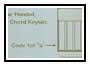Keyset
Cue Card: the "Keyset" used for entering
command shortcuts by the left hand while operating the mouse
with the right hand. You can type anything on a keyset that
you can enter at the keyboard. Letters, beginning with "a",
are shown here on this cue-card chart (note it's a simple
binary progression). To make the input uppercase, press the
middle mouse button while typing. To get numbers or punctuation
instead of letters, depress left mouse button while typing.
They ran a series of tests in the '60s with then so-called
"Kelly Girls" and in all cases, no matter which
training style was used, users had the keyset mastered in
under 2 hours. For straight typing, the keyboard is still
much faster, but nothing we've seen to-date is as fast for
editing and maneuvering as the mouse-keyset combination.
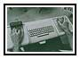Mouse-Keyset
in Use: 1968 mouse and companion chorded-keyset
on an ergonomic keyboard-console*. Keyset could be used to
enter command-key equivalents and literal text, while pointing
and clicking with the mouse. This is the first production
model of the mouse from 1967 model, with plastic casing and
metal underbelly, same wheel design, now with 3 buttons. This
was the setup used at the 1968 Fall Joint Computer Conference
demonstration.
tilt-swivel
office chair equipped with attached keyboard-console custom-made
for Engelbart by Herman Miller furniture company 1968
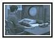Experimental
pointing device: late 1963 or early 1964; Engelbart
in search of best way to select screen objects for interactive
display workstations, launched an experimental study, managed
by Bill English. They selected a variety of available pointing
devices -- light pen, track ball, joysticks, the "Graficon"
pictured here, and the mouse -- and compared their speed and
accuracy within computer-driven testing situtions. The Mouse
won. Other experimental variations were later built and tested,
including foot-pedal operated, knee-operated, even head-operated
("nose pointing").
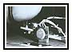Experimental
knee-pointing device: [upside down OOPS!] another
contender to the mouse cooked up by Engelbart's lab before
they settled on the mouse.
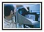Early
Display Technology: circa 1968 the computer image
was captured by video and piped to the display screen. Engineer
shown adjusting the video camera focus.
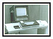Production
Workstation: Closeup of first production model
of the mouse 1967, this model made of plastic casing with
metal underbelly, same wheel design, now with 3 buttons. Note
that the cord comes out of the "front" of the mouse,
even though the casing was originally designed for the cord
to be brought out of the "back."
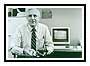Engelbart
& Mice: 1984 in his office at Tymshare, Engelbart
holding Original Mouse next to Modern (1984) model.
Note:
Doug Engelbart has called this style of collective work "bootstrapping."
We are engaged in bootstrapping the history of human-computer
interaction.
|